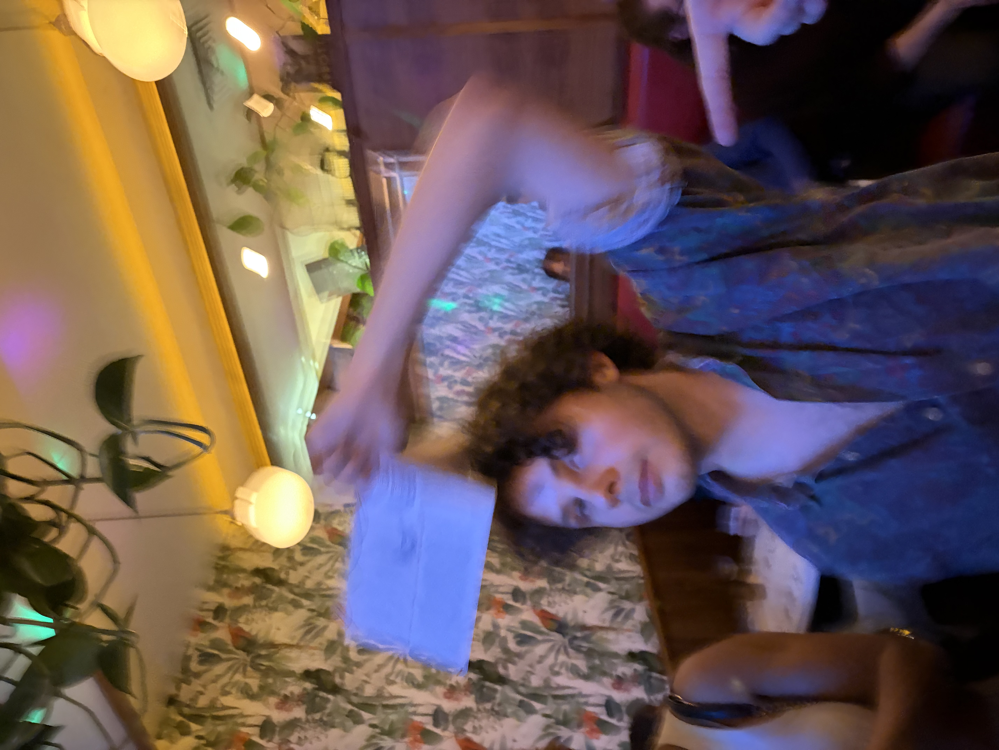
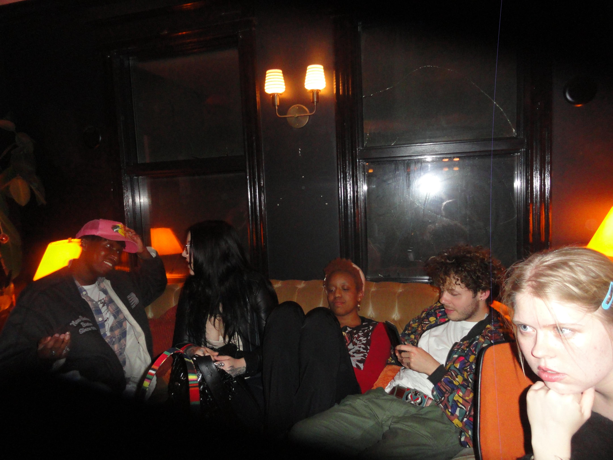

| PERSONAL AD № 001 🐸 AMPHIBIAN SEEKS PRINCESS OR APPLICABLE ROYALTY TO AID IN BIPEDAL TRANSFORMATION 💋 | |
Gideon> AGE: 24 > HE/HIM > HEIGHT: 5'9" > LOCATION: MADISON WI
INTERESTED IN: ♀ Women
@gideon.french
Gideon. Where do you even start. He likes to watercolor paint and to screenprint shirts (theoretically). He is a photographer but only digital and is a little self conscious he hasn't been in a darkroom yet (poser!). He is a lover of music, especially Brazilian MPB, Detroit Techno and Chicago House, Turkish Psychedelia, Smooth Jazz, Jungle, Indie Folk, and Trip Hop, varying by the month. He will rant about urbanism at least once a day (legally), and you will learn to find it fascinating. His friends describe him as "surprisingly worldly" and "most likely to know where the nearest kombucha bar is." He has no current enemies for comment but is aiming for a villain arc in 2028. He bikes around town with grocery bags on his handlebars to tempt fate to strike him down for his sins. Known quirks: He sneezes when he gets full. Also a collector of knickknacks, so those with strong opinions about windowsill space should proceed with caution. Cooks amazing vegetarian food: pizza, pasta, tamales, enchiladas, falafels, dumplings... come with an empty stomach.
► INTENTIONS: Looking for someone who like spontaneous adventures, silly conversations, fun (or weird) movies, and good cuddling
► SEEKING: Someone funny, creative, and weird in a good way. Ambitious and has goals and hobbies that they love. Someone we can get along with as people, as friends, and as a couple.
► GIDEON WANTS TO KNOW:
A wizard lets you curse someone to become one animal. What is the absolute worst animal to become? Really? You would turn someone into that? You're terrible. I want you.
DateMate™ User Reviews › Gideon: Madison WI
★★★★★
I said I wanted to grab coffee and he said he knew a place. He took me to a coffeeshop run by mice that only serves coffee in thimbles. It took us hours to drink a full cup equivalent. Then we went to a movie about a german commune sent into space. We went to an art museum that only had sculptures made of toothpicks. I think I'm forever changed.
   |